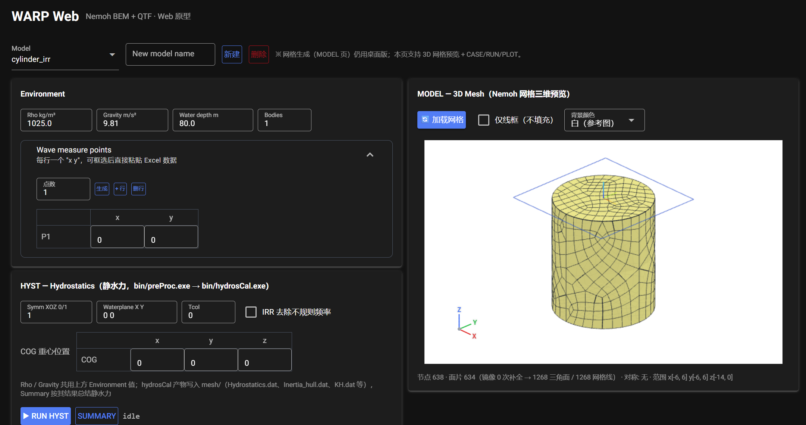

WARP Web — 在线帮助
WARP（Wave-structure Analysis Response Program）是基于开源 BEM 求解器 Nemoh（École Centrale Nantes / LHEEA）的波浪-结构相互作用前后处理工具。
V2.0（Web 版） 将原桌面版（Tkinter）界面完整重写为浏览器界面：所有参数输入、计算调用与结果查看都在网页内完成。

功能总览
| 板块 | 内容 |
|---|---|
| MODEL | 模型选择 / 新建 / 删除；<model>.dat 网格三维预览（对称自动镜像补全）；波浪测量点 |
| HYST | 静水力链路 preProc.exe → hydrosCal.exe；SUMMARY 汇总浮心 / 排水量 / 水线面面积 / 质量 |
| 参数 | Environment（密度 / 重力 / 水深）；Body set（6 自由度）；MASS（质量、转动惯量、附加阻尼、附加刚度）；Load Cases（频率与浪向）；Solver（高斯积分 / GMRES）；Post Set；QTF Set |
| 计算 | SAVE .CAL 生成 Nemoh.cal；SAVE MECHANICS 生成参数矩阵（质量、附加阻尼、附加刚度）；RUN BEM / RUN QTF 后台运行，日志实时滚动；运行前旧结果自动备份 |
| Results | 一阶波浪激励力（幅值 / 相位）、运动 RAO、附加质量与辐射阻尼曲线，支持浪向切换 |
| QTF Results | 二阶差频 / 和频 QTF 等高线四联图与主对角线平均漂移力显示 |
版本说明（相对桌面版 V1.0）
- 界面由 Tkinter 桌面程序改为浏览器页面（NiceGUI），无需安装客户端。
- 静水力链路更新为
preProc.exe → hydrosCal.exe（桌面版为mesh.exe）。 - 新增 GMRES 迭代求解器选项、波浪测量点批量粘贴、模型删除、运行日志实时输出等能力。
- 附加质量与辐射阻尼读取已修正 Nemoh 官方文件的命名差异（
CA.dat= 辐射阻尼，CM.dat= 附加质量）。
当前版本仅支持单体参数输入；多体工况需手工编辑
.cal文件。